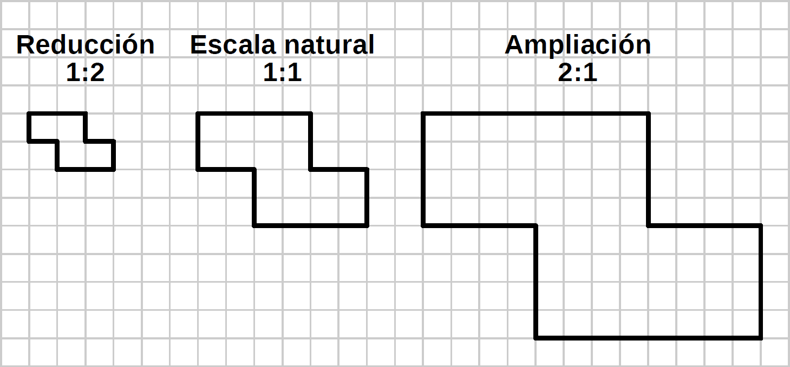

Escales¶
Representació d'objectes a diferents mides.
{kind=link}

Quan heu de representar un objecte gran en un avió, per exemple un camió, no és pràctic dibuixar -lo amb la seva mida real. En aquests casos, és convenient dibuixar l'objecte a mida reduïda. Si els objectes són massa petits, per exemple, un component electrònic, és convenient dibuixar amb una mida ampliada.
- ** Escala **
És la proporció d'extensió o reducció amb la qual es dibuixa un objecte de paper.
Si l'escala comença amb un nombre més gran que un és una escala d'extensió (per exemple, una escala de 10: 1). Si l'escala comença un seguit d'un nombre superior a un, és una escala de reducció (per exemple, una escala 1:10)
- ** Escala natural **
- S'utilitza per representar objectes amb un dibuix de la mateixa mida que la realitat. L’escala natural també es representa com a escala 1: 1
- ** Escala de reducció **
- S'utilitza quan la mida de l'objecte és superior a la mida del full de paper. Una escala 1:10 significa que el dibuix serà de mida deu vegades menys que l'objecte real. Per exemple, un armari de 200cm dibuixat a escala 1:10 tindrà una mida de 20cm a la fitxa de paper.
- ** Escala d'extensió **
- S'utilitza per representar objectes petits. Una escala d’extensió 10: 1 servirà per representar un engranatge de rellotge de 5 mm, amb una mida de 50 mil·límetres en paper.
Escales estandarditzades¶
Tot i que es pot utilitzar qualsevol valor d’escala, a la pràctica es recomana utilitzar determinats valors normalitzats en els avions tècnics per facilitar la lectura de les dimensions. Aquestes són algunes de les escales normalitzades:
| Reducció | 1: 2 | 1: 5 | 1:10 | 1:20 | 1:50 | 1: 100 | 1: 200 | 1: 500 |
| Extensió | 2: 1 | 5: 1 | 10: 1 | 20: 1 | 50: 1 |
En casos especials, com en la construcció d’edificis, s’utilitzen escales intermèdies com l’escala 1:40 o l’escala 1:25.
A la taula següent apareixen alguns exemples d’escales i la mida dels objectes que es poden representar en aquesta escala en un full de mida de foli o paper A4.
| Escala | Mida que es pot representar en un foli
Exemple d'objectes
|
|---|---|
| 1: 100 | Fins a 25 x 15 metres en un foli
Casa, camió, gran saló
|
| 1:20 | Fins a 5 x 3 metres en un foli
Prestatgeria, armari, cotxe, habitació
|
| 1:10 | Fins a 250 x 150 centímetres en un foli
Bicicleta, televisió, cadira
|
| 1: 2 | Fins a 50 x 30 centímetres en un foli
Consola de videojocs, ampolla, Sierra
|
| 1: 1 (natural) | Fins a 25 x 15 centímetres en un foli
Tornavís, tauleta
|
| 2: 1 | Fins a 12 x 7 centímetres en un foli
Smartphone, cargol
|
| 10: 1 | Fins a 25 x 15 mil·límetres en un foli
Peces de rellotge, memòria micro sd
|
Exercicis d’escales¶
Aquest exercici consisteix a copiar les figures en un paper quadriculat amb la mateixa mida que apareix al full imprès. La xifra es copiarà amb una escala d'extensió 2: 1, el doble de la seva mida. Finalment, s’ha de copiar la xifra amb una escala de reducció 1: 2, a la meitat de la seva mida.
El primer full conté figures senzilles, formades només amb línies verticals i línies horitzontals. El segon full conté figures amb línies verticals i horitzontals, figures amb línies inclinades i figures amb cercles.
Plaques amb figures per dibuixar a l'escala.

|

|